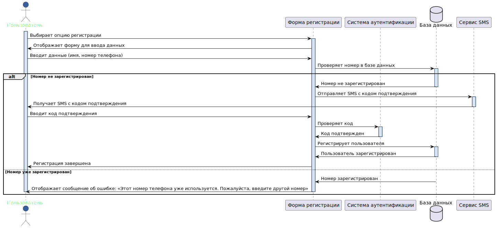
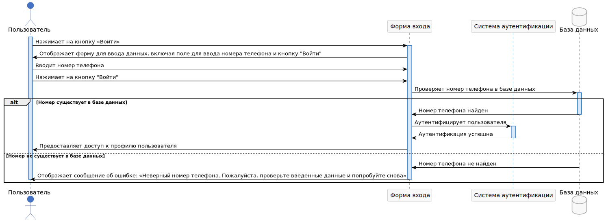
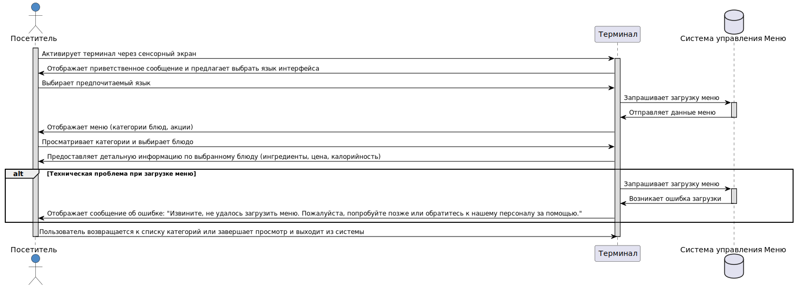
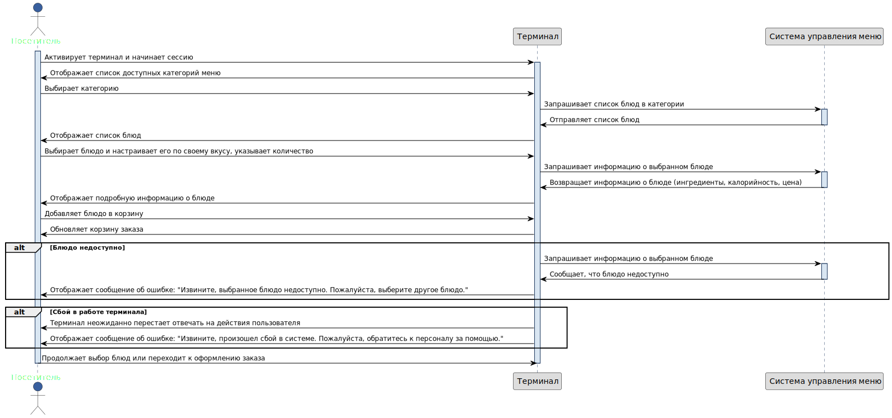
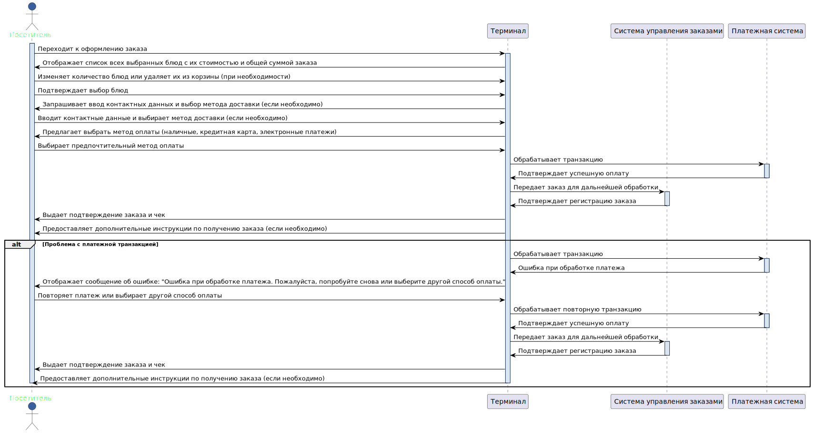

Сценарии использования
Описание UseCases, реализуемых в рамках MVP
UC1: Регистрация пользователя
| Атрибут | Описание |
|---|---|
| ID и название | UC1: Регистрация пользователя |
| Описание | Позволяет новым пользователям создать учетную запись в системе. |
| Основные акторы | Потенциальные пользователи |
| Второстепенные акторы | Система аутентификации |
| Предусловия | Пользователь не должен быть зарегистрирован в системе. |
| Основной поток событий | 1. Пользователь выбирает опцию регистрации. 2. Система отображает форму для ввода данных. 3. Пользователь вводит требуемые данные (имя, номер телефона). 4. Пользователь нажимает на кнопку для подтверждения регистрации. 5. Система проверяет номер в базе данных – номер не зарегистрирован. 6. Система отправляет SMS с кодом подтверждения на введенный номер телефона. 7. Пользователь вводит код подтверждения из SMS. 8. Система проверяет код и регистрирует пользователя. |
| Альтернативный поток событий 1 | Номер телефона уже зарегистрирован: 5. Система проверяет номер в базе данных – номер зарегистрирован. 6. Система отображает сообщение об ошибке: «Этот номер телефона уже используется. Пожалуйста, введите другой номер». |
| Альтернативный поток событий 2 | Неверный формат номера телефона: 3. Пользователь вводит требуемые данные (имя, номер телефона). 4. Система проверяет, что введен неверный формат номера телефона. 5. Система отображает сообщение об ошибке: «Некорректный формат номера телефона. Пожалуйста, проверьте введенные данные». |
| Альтернативный поток событий 3 | Не получено SMS с кодом подтверждения: 6. Система отправляет SMS с кодом подтверждения на введенный номер телефона. 7. Пользователь не получил SMS с кодом. 8. Система предлагает повторно отправить SMS с кодом через 1 минуту. 9. Пользователь нажимает на кнопку «Отправить SMS» |
| Постусловия | Пользователь успешно зарегистрирован и может войти в систему. |
| Триггеры | Пользователь выбирает "Зарегистрироваться". |
| Исключения | Номер телефона уже используется в системе. |
| Частота использования | По мере появления новых пользователей. |
| Диаграмма |  |
| Макеты | protUC1 |
{kind=link}
Задача 1.1: Реализация интерфейса регистрации
Описание задачи: Разработать и интегрировать интерфейс регистрации пользователя, включая форму для ввода имени и номера телефона (макет – protUC1).
Тест-кейс 1.1.1: Проверка доступности формы регистрации (тестирование пользовательского интерфейса, положительный тест):
Шаги:
1. Нажать на кнопку «Зарегистрироваться».
2. Дождаться полной загрузки страницы регистрации.
Ожидаемый результат: Форма регистрации загружается без ошибок, поля ввода активны.
Тест-кейс 1.1.2: Ввод валидных данных (валидационное тестирование, положительный тест):
Шаги:
1. Ввести корректное имя, например, Иван.
2. Ввести мобильный номер телефона, например, +79312009900.
3. Нажать на кнопку "Зарегистрироваться" для отправки данных.
Ожидаемый результат: Данные принимаются без ошибок, пользователь переходит к следующему шагу (получение SMS).
Тест-кейс 1.1.3: Попытка отправить пустую форму (валидационное тестирование, отрицательный тест):
Шаги:
1. Перейти на страницу регистрации.
2. Оставить поля ввода имени и номера телефона пустыми.
3. Нажать на кнопку "Зарегистрироваться" без ввода каких-либо данных в форму.
4. Наблюдать за реакцией системы.
Ожидаемый результат:
* Система выдает сообщение о необходимости заполнения всех полей.
* Кнопка "Зарегистрироваться" задизейблена.
Задача 1.2: Верификация номера телефона и отправка SMS
Описание задачи: Реализовать проверку уникальности номера телефона в базе данных и механизм отправки SMS с кодом подтверждения. Пример макета – Рисунок 2.
Тест-кейс 1.2.1: Проверка на уникальность номера телефона (валидационное тестирование, отрицательный тест):
Шаги:
1. Перейти на форму регистрации.
2. Ввести имя и номер телефона, который уже используется другим пользователем в системе.
3. Нажать на кнопку "Зарегистрироваться".
Ожидаемый результат:
* Система идентифицирует, что введенный номер телефона уже зарегистрирован.
* Пользователь получает сообщение об ошибке: "Этот номер телефона уже используется. Пожалуйста, введите другой номер."
Тест-кейс 1.2.2: Отправка SMS на валидный номер (интеграционное тестирование, положительный тест)
Шаги:
1. Перейти на форму регистрации.
2. Ввести имя и уникальный номер телефона, который не используется в системе.
3. Нажать на кнопку "Зарегистрироваться".
Ожидаемый результат:
* Система проверяет, что номер телефона не зарегистрирован в базе данных и принимает его.
* На введенный номер телефона отправляется SMS с кодом подтверждения.
* Пользователь получает уведомление на странице о том, что SMS с кодом подтверждения было отправлено.
Тест-кейс 1.2.3: Ввод невалидного номера телефона (валидационное тестирование, отрицательный тест)
Шаги:
1. Перейти на форму регистрации.
2. Ввести в форму регистрации имя и невалидный номер телефона (например, слишком мало цифр или присутствуют буквы).
3. Нажать на кнопку "Зарегистрироваться".
Ожидаемый результат:
* Система проверяет формат номера телефона и идентифицирует его как невалидный.
* Пользователь получает сообщение об ошибке: "Некорректный формат номера телефона. Пожалуйста, проверьте введенные данные."
Задача 1.3: Обработка кода подтверждения и завершение регистрации
Описание задачи: Реализовать функционал для ввода и проверки кода из SMS и завершения процесса регистрации пользователя.
Тест-кейс 1.3.1: Ввод корректного кода подтверждения (функциональное тестирование, положительный тест)
Шаги:
1. Перейти на страницу ввода кода подтверждения, которая отображается после отправки SMS пользователю.
2. Ввести корректный код подтверждения, полученный в SMS.
3. Нажать на кнопку «Подтвердить».
Ожидаемый результат:
1. Система проверяет введенный код и подтверждает его правильность.
2. Регистрация завершается успешно, и пользователь автоматически перенаправляется на страницу подтверждения успешной регистрации.
Тест-кейс 1.3.2: Ввод некорректного кода подтверждения (функциональное тестирование, отрицательный тест)
Шаги:
1. Перейти на страницу ввода кода подтверждения, которая отображается после отправки SMS пользователю.
2. Ввести некорректный код подтверждения.
3. Нажать на кнопку «Подтвердить».
Ожидаемый результат:
* Система проверяет введенный код и определяет его как некорректный.
* На странице появляется сообщение об ошибке: "Неверный код подтверждения. Пожалуйста, попробуйте снова."
* Пользователь остается на странице ввода кода для повторной попытки.
Тест-кейс 1.3.3: Истечение времени действия кода подтверждения (функциональное тестирование, отрицательный тест)
Шаги:
1. Перейти на страницу ввода кода подтверждения после истечения времени действия кода (например, через 30 минут после получения).
2. Ввести код подтверждения, который был получен в SMS.
3. Нажать на кнопку «Подтвердить».
Ожидаемый результат:
* Система проверяет введенный код и определяет, что время его действия истекло.
* На странице появляется сообщение об ошибке: "Время действия кода истекло. Новый код был отправлен на ваш номер телефона."
* Система автоматически отправляет новый код на номер телефона пользователя для повторного ввода.
Критерии приемки для UC1
- Пользователи могут успешно зарегистрироваться, вводя свое имя и номер телефона, и получить подтверждение через SMS.
- Система корректно обрабатывает ошибки, такие как уже зарегистрированный номер телефона или невалидный ввод, предоставляя ясные сообщения об ошибке.
- Интерфейс регистрации отзывчив и загружает формы без задержек, а все поля ввода активны и доступны.
- Все введенные данные проверяются на корректность формата и уникальность номера телефона.
- Все персональные данные передаются и хранятся в зашифрованном виде, обеспечивая конфиденциальность информации.
- SMS с кодом подтверждения отправляется только после успешной валидации данных пользователя и приходит в течение нескольких минут.
Критерии готовности для UC1
- Интерфейс регистрации пользователя полностью реализован и интегрирован с основной системой.
- Система аутентификации успешно интегрирована с базой данных для проверки уникальности номеров телефонов.
- Механизм отправки SMS для подтверждения регистрации реализован и функционирует корректно.
- Все тест-кейсы выполнены, включая положительные и отрицательные сценарии, и успешно пройдены.
- Все требования к безопасности и конфиденциальности выполнены, данные пользователей защищены.
- Подготовлена и проверена документация для разработчиков и конечных пользователей по использованию функциональности регистрации.
UC2: Вход в систему
| Атрибут | Описание |
|---|---|
| ID и название | UC2: Вход в систему |
| Описание | Аутентификация пользователя для доступа к системе. |
| Основные акторы | Зарегистрированные пользователи |
| Второстепенные акторы | Система аутентификации |
| Предусловия | Пользователь должен быть зарегистрирован. |
| Основной поток событий | 1. Пользователь нажимает на кнопку «Войти». 2. Система отображает форму для ввода данных, включая поле для ввода номера телефона и кнопку "Войти". 3. Пользователь вводит номер телефона. 4. Пользователь нажимает на кнопку "Войти". 5. Система проверяет введенные данные – номер телефона заведен в базе данных. 6. Система предоставляет доступ к профилю пользователя. 7. Пользователь получает доступ к своему профилю. |
| Альтернативный поток событий 1 | Неверный номер телефона: 5. Система проверяет введенные данные и не находит соответствия номера телефона в базе данных. 6. Система отображает сообщение об ошибке: «Неверный номер телефона. Пожалуйста, проверьте введенные данные и попробуйте снова». 7. Пользователь возвращается к форме входа и проверяет введенные данные. |
| Альтернативный поток событий 2 | Пустое поле ввода номера телефона: 2. Пользователь оставляет поле ввода номера телефона пустым и нажимает на кнопку "Войти". 3. Система проверяет поле ввода и обнаруживает, что оно пустое. 4. Система отображает сообщение об ошибке: "Это поле не может быть пустым". 5. Пользователь возвращается к форме входа и вводит номер телефона. |
| Постусловия | Пользователь успешно входит в систему. |
| Триггеры | Пользователь выбирает "Войти". |
| Исключения | Неверный номер телефона |
| Частота использования | Каждый раз при попытке пользователя войти в систему. |
| Диаграмма |  |
| Макеты | protUC2 |
{kind=link}
Задача 2.1: Разработка интерфейса входа в систему
Описание задачи: Необходимо разработать пользовательский интерфейс для входа в систему, который включает:
- Поле для ввода номера телефона.
- Кнопку "Войти".
- Сообщения об ошибках для неверных попыток входа.
Тест-кейс 2.1.1: Проверка отображения формы входа (тестирование пользовательского интерфейса, положительный тест)
Шаги:
1. Нажать на кнопку «Войти»
2. Оценить загрузку элементов страницы.
Ожидаемый результат:
- Страница загружается быстро и без ошибок.
- Поле для ввода номера телефона и кнопка "Войти" отображаются корректно.
Тест-кейс 2.1.2: Попытка входа с пустым полем номера телефона (тестирование валидации, отрицательный тест)
Шаги:
1. Оставить поле ввода номера телефона пустым.
2. Нажать на кнопку "Войти".
Ожидаемый результат: Система отображает сообщение об ошибке: "Это поле не может быть пустым".
Задача 2.2: Реализация логики аутентификации
Описание задачи: разработать бэкенд-логику для проверки номера телефона пользователя:
- Проверить наличие номера в базе данных.
- Реализовать безопасное хранение и проверку данных.
- Предусмотреть логирование попыток входа.
Тест-кейс 2.2.1: Вход с верным номером телефона (функциональное тестирование, положительный тест)
Шаги:
1. Ввести существующий в базе данных номер телефона.
2. Нажать "Войти".
Ожидаемый результат:
- Система успешно идентифицирует пользователя.
- Пользователь перенаправляется на главную страницу меню.
Тест-кейс 2.2.2: Вход с неверным номером телефона (функциональное тестирование, отрицательный тест)
Шаги:
1. Ввести номер телефона, которого нет в базе данных.
2. Нажать "Войти".
Ожидаемый результат: Система отображает сообщение об ошибке: "Номер телефона не найден".
Задача 2.3: Реализация управления ошибками при аутентификации
Описание задачи: необходимо разработать и интегрировать механизмы для управления ошибками, которые могут возникать во время процесса аутентификации пользователя:
- Обработка некорректно введенных данных
- Предоставление четких инструкций для исправления ошибок
- Возможность повторного ввода данных без необходимости перезагрузки страницы.
Тест-кейс 2.3.1: Проверка обработки неверного номера телефона (функциональное тестирование, отрицательный тест)
Шаги:
1. Ввести неверный номер телефона.
2. Нажать "Войти".
Ожидаемый результат:
- Система определяет, что номер телефона введен некорректно.
- Пользователю отображается сообщение об ошибке рядом с полем ввода: "Неверный номер телефона. Пожалуйста, проверьте введенные данные и попробуйте снова".
- Предоставляется возможность исправить ввод без необходимости перезагрузки страницы.
Тест-кейс 2.3.2: Валидация корректного повторного ввода номера телефона после ошибки (функциональное тестирование, положительный тест)
Шаги:
1. После получения сообщения об ошибке корректно ввести номер телефона.
2. Нажать кнопку "Войти" снова.
Ожидаемый результат:
- Система успешно проверяет исправленный номер телефона.
- Пользователь получает доступ к своему профилю, процесс переходит к загрузке домашней страницы пользователя без перезагрузки или дополнительных задержек.
Тест-кейс 2.3.3: Обработка множественных неверных попыток входа (функциональное тестирование, отрицательный тест)
Шаги:
1. Ввести неверный номер телефона в форму входа и нажать "Войти".
2. Повторить шаг 1 пять раз с тем же или разными неверными номерами телефона.
3. Попытаться ввести верный номер телефона и нажать "Войти".
Ожидаемый результат:
- После нескольких неверных попыток (например, пяти), система должна автоматически блокировать дальнейшие попытки входа на некоторое время или до дополнительной верификации.
- Пользователь получает сообщение: "Ваш аккаунт временно заблокирован из-за множественных неверных попыток входа. Пожалуйста, попробуйте снова через 30 минут или обратитесь в службу поддержки".
- Даже при вводе верного номера телефона доступ в систему не предоставляется до истечения времени блокировки или до прохождения дополнительной процедуры верификации.
Критерии приемки для UC2
- Пользователи могут успешно войти в систему, используя свой зарегистрированный номер телефона.
- Система корректно обрабатывает случаи, когда введенный номер телефона некорректен или отсутствует в базе данных, предоставляя ясные и точные сообщения об ошибке.
- Время ответа системы на попытку входа не превышает 5 секунд.
- Все процессы аутентификации обеспечивают безопасное хранение и передачу данных, используя современные методы шифрования и безопасности.
- Интерфейс входа в систему должен быть понятным и удобным для пользователя, позволяя легко ввести необходимые данные и понять, какие действия требуются для входа.
- Система должна эффективно проверять формат и наличие введенного номера телефона в базе данных.
- Система должна корректно обрабатывать множественные попытки входа, включая блокировку пользователя после нескольких неудачных попыток для предотвращения несанкционированного доступа.
Критерии готовности для UC2
- Интерфейс входа в систему полностью реализован, оптимизирован и интегрирован с основной системой управления пользователями.
- Система проверки номеров телефонов интегрирована с базой данных и все пользовательские данные защищены с использованием современных методов шифрования и защиты от атак.
- Все компоненты системы прошли полный цикл тестирования (единичные, интеграционные и приемочные тесты) и документированы, включая архитектурные решения и пользовательские инструкции.
- Система обеспечивает корректную обработку ошибок с четкими пользовательскими сообщениями и адаптирована для использования на различных устройствах и платформах.
UC3: Просмотр меню через терминал
| Атрибут | Описание |
|---|---|
| ID и название | UC3: Просмотр меню через терминал |
| Описание | Пользователь может просматривать текущее меню ресторана через интерактивный терминал, |
| доступный в ресторане. Это позволяет узнавать о доступных блюдах, их ценах и ингредиентах перед заказом. | |
| Основные акторы | Посетители ресторана |
| Второстепенные акторы | Система управления меню |
| Предусловия | Терминал должен быть включен и функционировать. Меню должно быть актуальным и |
| загруженным в систему управления меню. | |
| Основной поток событий | 1. Посетитель подходит к терминалу и активирует его через сенсорный экран. 2. Терминал отображает приветственное сообщение и предлагает выбрать язык интерфейса. 3. Посетитель выбирает предпочитаемый язык. 4. Терминал загружает и отображает меню, включая категории блюд (например, закуски, основные блюда, десерты) и акции. 5. Посетитель просматривает различные категории и блюда. 6. Терминал предоставляет детальную информацию по выбранному блюду по запросу клиента (ингредиенты, цена, калорийность). 7. Посетитель может вернуться к списку категорий или завершить просмотр и выйти из системы. |
| Альтернативный поток событий 1 | Техническая проблема при загрузке меню: 4. Терминал пытается загрузить меню, но процесс завершается с ошибкой из-за технической проблемы (например, отсутствие связи с сервером). 5. Терминал отображает сообщение об ошибке: "Извините, не удалось загрузить меню. Пожалуйста, попробуйте позже или обратитесь к нашему персоналу за помощью." 6. Посетитель может либо попытаться повторить запрос, либо обратиться к персоналу ресторана. |
| Альтернативный поток событий 2 | Некорректный ввод: 2. Терминал отображает приветственное сообщение и предлагает выбрать язык интерфейса. 3. Посетитель нажимает на области экрана, не предназначенные для взаимодействия. 4. Терминал остается стабильным, без изменений в интерфейсе или ошибок. |
| Постусловия | Посетитель получает необходимую информацию о меню. Терминал готов к использованию следующим посетителем. |
| Триггеры | Посетитель начинает взаимодействие с терминалом. |
| Исключения | Если меню не загружается или доступно из-за технических проблем, |
| терминал отображает сообщение об ошибке и предлагает повторить попытку позже или обратиться к персоналу. | |
| Частота использования | Может использоваться множество раз в течение дня. |
| Диаграмма |  |
| Макеты | protUC3 |
{kind=link}
Задача 3.1: Разработка интерфейса терминала
Описание задачи: разработать интерфейс пользователя для интерактивного терминала, который позволяет просматривать меню ресторана. Интерфейс должен быть интуитивно понятным, поддерживать мультиязычность.
Тест-кейс 3.1.1: Проверка отображения интерфейса (функциональное тестирование, положительный тест)
Шаги:
1. Включить терминал.
2. Наблюдать за загрузкой начального экрана.
Ожидаемый результат:
- Начальный экран загружается без ошибок.
- Отображается приветственное сообщение и выбор языка.
Тест-кейс 3.1.2: Реакция на некорректный ввод (функциональное тестирование, отрицательный тест)
Шаги:
1. Нажать на области экрана, не предназначенные для взаимодействия.
Ожидаемый результат:
- Никаких изменений в интерфейсе или ошибок не происходит.
- Система остаётся стабильной и готовой к дальнейшему вводу.
Задача 3.2: Интеграция с системой управления меню
Описание задачи: разработать бэкенд-логику для взаимодействия терминала с центральной системой управления меню. Это включает загрузку и актуализацию данных меню в реальном времени.
Тест-кейс 3.2.1: Проверка загрузки меню (интеграционное тестирование, положительный тест)
Шаги:
1. Выбрать язык на терминале.
2. Просмотреть загрузку различных категорий меню.
Ожидаемый результат: Меню загружается полностью и корректно отображает все доступные категории и блюда.
Тест-кейс 3.2.2: Обработка ошибок загрузки (интеграционное тестирование, отрицательный тест)
Шаги:
1. Искусственно создать сбой в связи с сервером.
2. Попытаться получить данные о меню через терминал.
Ожидаемый результат:
- Терминал отображает четкое сообщение об ошибке.
- Предоставляется опция повторить попытку или обратиться за помощью.
Задача 3.3: Обработка пользовательских взаимодействий
Описание задачи: реализовать функциональность терминала для обработки пользовательских взаимодействий, включая просмотр деталей блюда и возврат к предыдущему меню.
Тест-кейс 3.3.1: Просмотр деталей блюда (функциональное тестирование, положительный тест)
Шаги:
1. Выбрать блюдо из списка.
2. Открыть детальное описание блюда.
Ожидаемый результат: Отображается полная информация о блюде, включая ингредиенты, цену и калорийность.
Тест-кейс 3.3.2: Возврат к списку категорий (функциональное тестирование, положительный тест)
Шаги:
1. Находясь в деталях блюда, нажать кнопку "Назад".
Ожидаемый результат: Пользователь возвращается к списку категорий без задержек и ошибок.
Критерии приемки для UC3
- Точность и актуальность данных: Меню отображает точные и актуальные данные о блюдах, их ценах и ингредиентах.
- Интерфейс легко понятен для пользователей, предоставляя легкий доступ ко всем категориям меню и деталям блюд.
- Система отзывается на взаимодействия пользователя без задержек, и меню загружается в течение нескольких секунд после запроса.
- Система стабильна и не выдает ошибок при стандартном использовании, включая ситуации, когда сервер не отвечает или данные временно недоступны.
- В случае технических проблем или ошибок загрузки данных, терминал предоставляет ясные инструкции о том, как обратиться за помощью или повторить запрос.
Критерии готовности для UC3
- Интерфейс для просмотра меню полностью реализован и интегрирован с системой управления меню. Интерфейс поддерживает мультиязычность и адаптивен к различным устройствам.
- Все процессы передачи данных между терминалом и системой управления защищены и оптимизированы для обеспечения надежности и быстродействия.
- Интерфейс и бэкенд-логика тщательно протестированы, включая функциональное, интеграционное и приемочное тестирование, для гарантии корректной работы всех элементов.
- Вся документация, включая техническую документацию и руководства для пользователя, полностью подготовлена и доступна.
- Механизмы обработки исключений, такие как ошибки загрузки данных, реализованы и тестируются для обеспечения адекватной реакции системы на любые сценарии.
UC4: Интерактивный выбор и добавление блюд в корзину
| Атрибут | Описание |
|---|---|
| ID и название | UC4: Интерактивный выбор и добавление блюд в корзину |
| Описание | Посетители могут использовать интерактивные терминалы в ресторане для выбора и добавления блюд в корзину заказа. Этот процесс позволяет гостям просматривать меню, выбирать блюда, адаптировать их по своему вкусу, указывать количество порций и добавлять выбранные позиции в виртуальную корзину перед оформлением заказа. |
| Основные акторы | Посетители ресторана |
| Второстепенные акторы | Система управления меню |
| Предусловия | Интерактивный терминал должен быть включен и работоспособен. Меню и данные о блюдах должны быть актуальными и доступными в системе управления меню. |
| Основной поток событий | 1. Посетитель активирует терминал и начинает сессию. 2. Терминал отображает список доступных категорий меню (например, закуски, основные блюда, десерты). 3. Посетитель выбирает категорию и просматривает список блюд. 4. Посетитель выбирает блюдо, настраивает его по своему вкусу и указывает количество. 5. Терминал отображает подробную информацию о блюде, включая ингредиенты, калорийность и цену. 6. Посетитель добавляет блюдо в корзину. 7. Посетитель может продолжить выбор блюд или перейти к оформлению заказа. |
| Альтернативный поток событий 1 | Блюдо недоступно: 5.Терминал пытается загрузить информацию о блюде, но процесс завершается с ошибкой из-за отсутствия ингредиентов. 6.Терминал отображает сообщение об ошибке: "Извините, выбранное блюдо недоступно. Пожалуйста, выберите другое блюдо." 7. Посетитель выбирает другое блюдо или изменяет параметры уже выбранного блюда. |
| Альтернативный поток событий 2 | Сбой в работе терминала: 4.Терминал неожиданно перестает отвечать на действия пользователя. 5. Терминал перезагружается или отображает сообщение об ошибке: "Извините, произошел сбой в системе. Пожалуйста, обратитесь к персоналу за помощью." 6. Посетитель может попытаться снова использовать терминал или обратиться к персоналу ресторана. |
| Постусловия | В корзину добавлены все выбранные блюда с учетом настроек и количества. |
| Посетитель готов перейти к оформлению заказа или завершить сессию. | |
| Триггеры | Посетитель начинает взаимодействие с терминалом. |
| Исключения | Сбои в работе терминала. |
| Невозможность связи терминала с сервером системы управления меню. | |
| Частота использования | Может использоваться множество раз в течение дня. |
| Диаграмма |  |
| Макеты | protUC4 |
{kind=link}
Задача 4.1: Разработка интерфейса терминала для выбора блюд
Описание задачи: разработать и реализовать пользовательский интерфейс на интерактивных терминалах, который позволит посетителям просматривать меню, выбирать блюда и настраивать их по своему вкусу, а также добавлять их в корзину.
Тест-кейс 4.1.1: Проверка функциональности выбора категории (функциональное тестирование, положительный тест)
Шаги:
1. Запустить терминал и перейти к меню выбора.
2. Выбрать различные категории блюд (завтраки, обеды, десерты).
Ожидаемый результат:
- При выборе категории должен отобразиться соответствующий список блюд.
- Пользовательский интерфейс должен быстро реагировать на выбор и показывать актуальные данные.
Тест-кейс 4.1.2: Обработка некорректного взаимодействия (функциональное тестирование, отрицательный тест)
Шаги:
1. Попытаться выполнить действия вне предусмотренного потока (например, нажатие на неактивные элементы).
Ожидаемый результат:
- Никаких изменений в состоянии интерфейса или системных сбоев не происходит.
- Система остаётся стабильной и доступной для дальнейших действий.
Задача 4.2: Интеграция терминала с системой управления меню
Описание задачи: внедрить систему связи между терминалом и центральной системой управления меню для обеспечения актуальности данных и возможности их обновления в реальном времени.
Тест-кейс 4.2.2: Проверка актуализации данных меню (интеграционное тестирование, положительный тест)
Шаги:
1. Изменить данные о блюде в системе управления меню.
2. Проверить отображение измененных данных на терминале.
Ожидаемый результат: Изменения в меню должны корректно отразиться на терминале без задержек.
Тест-кейс 4.2.2: Обработка сбоев связи с сервером (интеграционное тестирование, отрицательный тест)
Шаги:
1. Искусственно создать проблему со связью между терминалом и сервером.
2. Попытаться получить данные о меню через терминал.
Ожидаемый результат: Терминал отображает сообщение об ошибке связи и предлагает попробовать позже или обратиться за помощью.
Задача 4.3: Реализация функции добавления блюд в корзину
Описание задачи: обеспечить возможность посетителям добавлять выбранные блюда в виртуальную корзину, включая настройку порций и добавление специальных инструкций к заказу.
Тест-кейс 4.3.1: Добавление блюда в корзину (функциональное тестирование, положительный тест)
Шаги:
1. Выбрать блюдо и настроить его параметры (количество, ингредиенты).
2. Добавить блюдо в корзину.
Ожидаемый результат:
- Блюдо с выбранными настройками добавляется в корзину.
- Корзина отображает правильную итоговую стоимость и список заказов.
Тест-кейс 4.3.2: Удаление блюда из корзины (функциональное тестирование, положительный тест)
Шаги:
1. Добавить блюдо в корзину.
2. Удалить это блюдо из корзины.
Ожидаемый результат:
- Блюдо успешно удаляется из корзины.
- Итоговая стоимость корзины корректно пересчитывается.
Критерии приемки для UC4
- Пользователи легко могут выбирать категории, блюда, настраивать их и добавлять в корзину без необходимости дополнительных инструкций.
- Интерфейс реагирует на действия пользователя без заметных задержек, и все изменения в меню или настройках блюд отображаются мгновенно.
- Информация о блюдах, включая цены, ингредиенты и калорийность, должна быть точной и соответствовать актуальным данным системы управления меню.
- Все добавленные в корзину элементы должны корректно отображать выбранные настройки и итоговую стоимость, а функции добавления и удаления должны работать без ошибок.
- В случае невозможности связи с сервером или других технических проблем, система должна корректно информировать пользователя и предлагать возможные пути решения.
Критерии готовности для UC4
- Реализация интерфейса терминала: Интерфейс для выбора и настройки блюд полностью реализован и интегрирован с системой управления меню. Интерфейс поддерживает интуитивное взаимодействие и мультиязычность.
- Все данные, отображаемые на терминале, должны быть точными и актуальными, синхронизированными в реальном времени с системой управления меню.
- Интерфейс и бэкенд-логика тщательно протестированы, включая функциональное, интеграционное и приемочное тестирование, для гарантии корректной работы всех элементов.
- Полная документация, включая технические спецификации, пользовательские руководства и процедуры обработки исключений, должна быть подготовлена и доступна.
- Все процессы передачи данных должны быть защищены, и система должна обладать высокой устойчивостью к сбоям и ошибкам.
UC5: Оформление заказа через терминал
| Атрибут | Описание |
|---|---|
| ID и название | UC5: Оформление заказа через терминал |
| Описание | Позволяет пользователю выбрать блюда и напитки из меню и оформить заказ. |
| Основные акторы | Посетители ресторана |
| Второстепенные акторы | Система управления заказами, платежная система |
| Предусловия | Посетитель уже выбрал блюда и добавил их в корзину через интерактивный терминал. Платежная система должна быть настроена и функционировать корректно. |
| Основной поток событий | 1. Посетитель переходит к оформлению заказа в терминале. 2. Терминал отображает список всех выбранных блюд с их стоимостью и общей суммой заказа. 3. Посетитель может изменить количество блюд или удалить их из корзины. 4. После подтверждения выбора блюд, терминал предлагает ввести контактные данные для связи (если необходимо) и выбрать метод доставки (если предусмотрено). 5. Посетитель выбирает предпочтительный метод оплаты (наличные, кредитная карта, электронные платежи). 6. Посетитель производит оплату согласно выбранному методу. 7. Терминал обрабатывает транзакцию и при успешной оплате выдает подтверждение заказа и чек. 8. Посетитель получает чек и, при необходимости, дополнительные инструкции по получению заказа (например, номер заказа и время ожидания). |
| Альтернативный поток событий 1 | Проблема с платежной транзакцией: 6. Терминал пытается обработать транзакцию, но процесс завершается с ошибкой (например, проблемы с банковской картой или сетью). 7. Терминал отображает сообщение об ошибке: "Ошибка при обработке платежа. Пожалуйста, попробуйте снова или выберите другой способ оплаты." 8. Посетитель может повторить платеж или выбрать другой способ оплаты. |
| Альтернативный поток событий 2 | Некорректный ввод контактных данных: 6. Посетитель вводит некорректные контактные данные. 7. Терминал проверяет введенные данные и обнаруживает ошибку. 8. Терминал отображает сообщение об ошибке: "Некорректный ввод данных. Пожалуйста, проверьте введенные данные и попробуйте снова." 9. Посетитель корректирует данные и продолжает оформление заказа. |
| Альтернативный поток событий 3 | Недостаточное количество баллов для оплаты: 5. Посетитель выбирает оплату накопленными баллами. 6. Терминал проверяет количество баллов и обнаруживает, что их недостаточно для покрытия стоимости заказа. 7. Терминал отображает сообщение об ошибке: "Недостаточно баллов для оплаты. Пожалуйста, выберите другой способ оплаты или уменьшите заказ." 8. Посетитель выбирает другой способ оплаты или уменьшает заказ. 9. Если посетитель выбирает другой способ оплаты, продолжается основной поток событий с шага 5. |
| Постусловия | Заказ успешно оформлен и передан в систему управления заказами для дальнейшей обработки. Посетитель информирован о статусе своего заказа. |
| Триггеры | Посетитель нажимает кнопку "Оформить заказ" на терминале. |
| Исключения | Сбой в работе терминала или системы оплаты. • Ошибка ввода данных посетителем. |
| Частота использования | Может использоваться множество раз в течение дня. |
| Диаграмма |  |
| Макеты | protUC5 |
{kind=link}
Задача 5.1: Разработка интерфейса оформления заказа
Описание задачи: разработать пользовательский интерфейс на интерактивных терминалах, который позволит посетителям просматривать свой заказ, вносить изменения и выбирать способ оплаты, включая использование накопленных баллов (макет protUC5).
Тест-кейс 5.1.1: Проверка функциональности отображения заказа (функциональное тестирование, положительный тест)
Шаги:
1. Выбрать и добавить блюда в корзину.
2. Перейти к оформлению заказа.
3. Просмотреть отображение списка выбранных блюд и итоговой суммы.
Ожидаемый результат: На терминале корректно отображается вся информация о выбранных блюдах с их стоимостью и общей суммой заказа.
Тест-кейс 5.1.2: Обработка некорректного ввода данных (функциональное тестирование, отрицательный тест)
Шаги:
1. Ввести некорректные контактные данные.
2. Попытаться перейти к оплате.
Ожидаемый результат: Система выдает сообщение о некорректном вводе и требует исправления данных.
Задача 5.2: Интеграция системы баллов для оплаты
Описание задачи: реализовать функционал, позволяющий авторизованным посетителям использовать накопленные баллы для частичной или полной оплаты заказа (макет protUC5).
Тест-кейс 5.2.1: Использование баллов для оплаты (функциональное тестирование, положительный тест)
Шаги:
1. Авторизоваться в системе через терминал.
2. Добавить блюда в корзину и перейти к оплате.
3. Выбрать опцию оплаты баллами.
4. Подтвердить использование достаточного количества баллов для покрытия стоимости заказа.
Ожидаемый результат: Оплата производится успешно, баллы списываются со счета пользователя, и на терминале отображается подтверждение оплаты.
Тест-кейс 5.2.2: Недостаточное количество баллов (функциональное тестирование, отрицательный тест)
Шаги:
1. Авторизоваться и попытаться использовать баллы, когда их недостаточно для покрытия стоимости заказа.
Ожидаемый результат: Терминал информирует о недостаточном количестве баллов и предлагает выбрать другой способ оплаты или уменьшить заказ.
Задача 5.3: Обработка платежей и подтверждение заказа
Описание задачи: обеспечить безопасное проведение транзакций через платежную систему и вывод подтверждения заказа с чеком.
Тест-кейс 5.3.1: Успешная оплата заказа (функциональное тестирование, положительный тест)
Шаги:
1. Выбрать способ оплаты (наличные, кредитная карта или баллы).
2. Внести платеж.
Ожидаемый результат: Платеж успешно обрабатывается, заказ регистрируется в системе, и пользователь получает чек с подтверждением заказа.
Тест-кейс 5.3.2: Ошибка при проведении платежа (функциональное тестирование, отрицательный тест)
Шаги:
1. Ввести данные для оплаты.
2. Система пытается обработать транзакцию.
Ожидаемый результат: Если транзакция не проходит, пользователь получает сообщение об ошибке и предложение повторить платеж или выбрать другой метод оплаты.
Критерии приемки для UC5
- Пользователи могут без ошибок просматривать выбранные блюда, изменять заказ, вводить данные для связи и выбирать способы доставки и оплаты.
- Интерфейс должен быть понятен и удобен для всех категорий пользователей, обеспечивая легкость внесения изменений в заказ и выбора опций оплаты.
- Отклик системы на действия пользователя должен быть мгновенным, без задержек при загрузке данных или в процессе платежа.
- Все платежи должны успешно обрабатываться с корректным списанием средств и предоставлением чека или подтверждения заказа.
- В случае возникновения ошибок пользователям должны быть предложены четкие инструкции по их устранению, включая сообщения о неудачных платежах и способах их решения.
Критерии готовности для UC5
- Интерфейс оформления заказа полностью реализован, включая функции выбора способа оплаты и использования баллов. Интерфейс интегрирован с системами управления заказами и платежной системой.
- Все аспекты интерфейса и функциональности прошли комплексное тестирование, включая функциональное, интеграционное и приемочное тестирование. Проверены все пути пользователя, включая альтернативные и исключительные сценарии.
- Все платежные операции защищены современными методами шифрования и соответствуют стандартам безопасности платежей.
- Подготовлена документация, описывающая процесс оформления заказа, инструкции для пользователя по работе с терминалом, а также документация по интеграции с другими системами.
- Реализованы и протестированы механизмы обработки всех возможных исключений и ошибок, которые могут возникнуть в процессе оформления заказа.